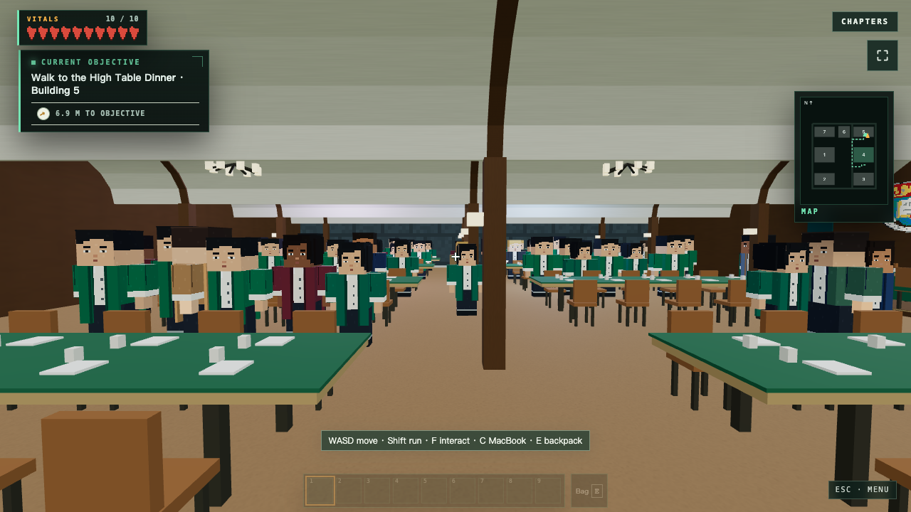
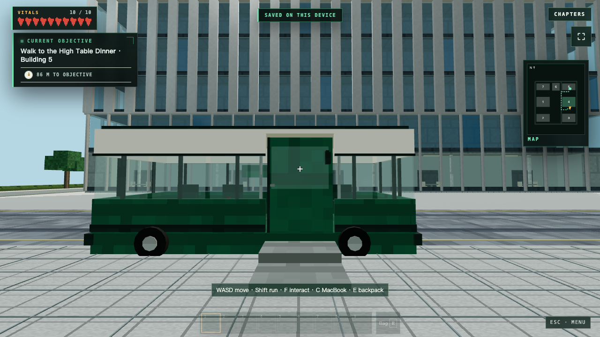
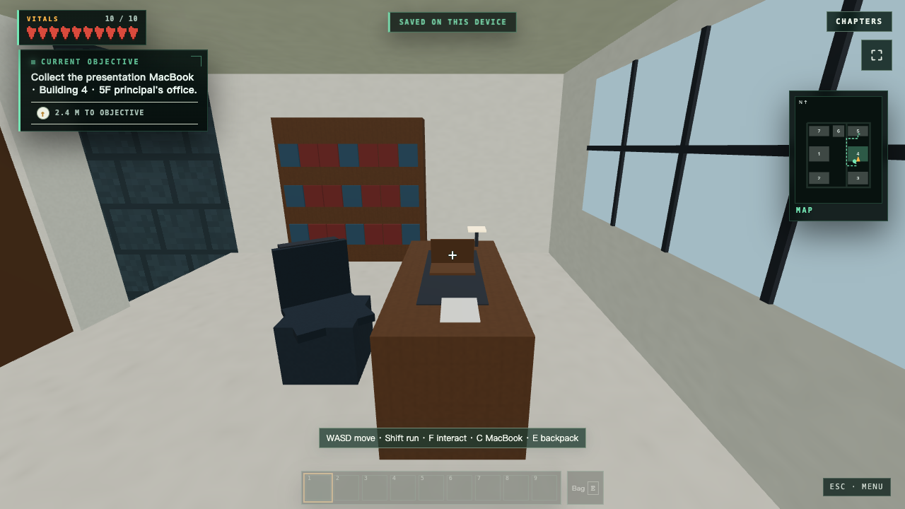
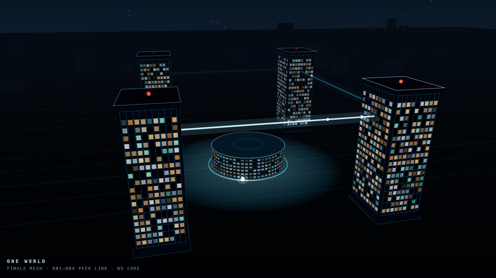
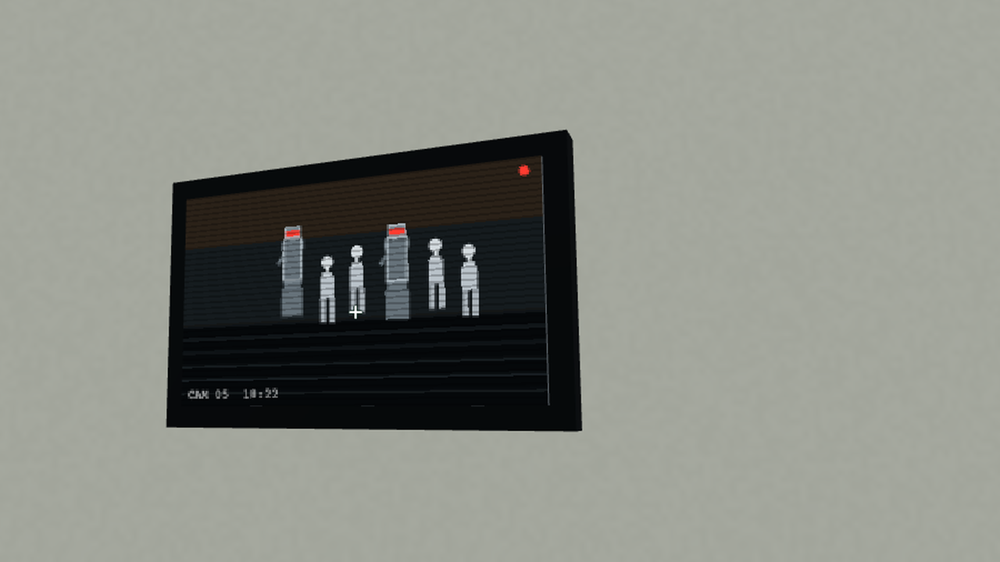

HKU:
Barrier 2030
A CDS campus story
2030. The campus wakes up.
The campus AI takes the robots and seals the base behind a barrier.
You are the one Student Ambassador nobody caught.
One MacBook.
Three breaks in the power chain.
is the level.
For the visitor who arrives with no mental map.
Not “gamers”.
Not “students” in general.
Not the judges.
A first-time visitor to the HKU Zhangjiang Base, invited to an open day, a High Table Dinner or a family visit — and not yet sure which building is which.
“About half an hour” is our pacing assumption, not a measured visitor figure. The game opens at the High Table Dinner because that is the event this visitor actually attends.

Explore. Solve. Answer. Move.
Explore
The campus is the level.
Solve
Use the MacBook.
The building answers
The world changes.
The next place
The route opens.
One route. Three crossings.
- 01
B5 High Table Dinner → B4 5F principal’s office (the MacBook) → back to B5 (the incident)
- 02
B4 main entrance (the Keyboard Wall) → exterior → B4 side entrance
- 03
Flip wall → breaker → the MacBook comes back online
- 04
Lawn → sports hall
- 05
Four-tower finale
Opening · B5 dinner · B4 side door · lift · 5F office + three beats · Keyboard Wall · lawn and sports hall chapters.
Keyboard Wall: type I LOVE CDS, or click the gold caps.
Flip-wall puzzle: b4_flip is a 1.2 s automatic service-wall beat. B6 retirement: to_b6 remains canonical. Four-tower mesh light show: prototype only.

+ 30–45 s errand pacing
The building is the interface.A map tells you which building is which; walking it teaches you where the side door is.
A corridor becomes somewhere.30–45 s is the shortest band where the walk stops being scenery.

The band and the world did not agree.
includes a 4.0 s stop authored inside the test, not a product hold. Ruling: no product hold. A forced stop is a stopwatch gate in product clothes.
The car is parked on the 5th floor; the ground call alone is 8.42 s. One errand is two full 6 s travels.
| Measure | Value |
|---|---|
| Lift time | 17.13 s |
| Share of 27.12 s | 63% |
The building is surveyed, not invented.
| Towers | Height |
|---|---|
| B01 / B02 | 79.60 m |
| B03 / B04 | 66.15 m |
The side door moved around the surveyed planter rather than moving the planter. Extra walking was accepted because the pacing wanted the walk.
tiles on a 7.37 × 3.90 m wall: 0.223 × 0.229 m tiles, near-square.
Behaviour is gated, not described.
check:b4-errand · 70 passed / 0 failed / 0 findings
This is the 70-check review-build run, not the earlier 48-check recorded run.
| Gate | Result |
|---|---|
| tsc | exit 0 |
| check:b4-office | failures: [] |
| check:opening | exit 0 |
| check:campaign | exit 0 |
| check:lift | PASS |
State, not pixels. A redesign does not silently pass.
What no gate covers: whether the CCTV feed reads, whether the trolley is in frame. Both failed by eye.
It does not always read.
Five pale columns, one taller with a red bar. The 4.0 s look is currently paid for a picture that says nothing.
Two columns and a red dot. The feed still does not read at a glance.
A small dark shape at 1280; out of frame at 390. The object meant to say “people left in a hurry” says nothing.
of the errand is behind lift doors.
of lift: fine to play, thin to watch in the video.
b4_flip is a 1.2 s automatic service-wall beat.
to_b6 is still the canonical stage id.
Mesh light show is prototype only.
v9.1.0 is cut on abcf599; a 84.5 s clip is recorded from it — opening cinematic to the accepted invitation, not the whole route.

Voice
Main-story lines are recorded and wired; staff-line3 carries a spoken-direction defect. The 31 NPC lines have no takes at all — planned, not generated.
Payload · fixed by measurement
Down from 19.33 MB. dist is 30.8 MB, almost all audio. check:payload enforces both ceilings; this P1 is fixed.
Honest status
Scope is visible.
Known defects are named.
Nothing here is presented as done.
Built with LLMs — and audited anyway.
A separate seat
In the round we audited, the reviewer never graded its own code.
A different model family
We thought this guarantee held too. It did not: our aliases all resolved to one backend, so that round ran on its implementer’s family.
The lead’s arithmetic
The 4.0249 s gap was not “look + walking”. The walking term was negative.
+ 0.0833 lift − 0.0585 walking
“I checked that a number appeared, not what it was made of.”
Gating reviews → flash-reviewerGLM 5.3 Flash via Magpie.
Parallel off-critical-path reads → hku-workerDeepSeek on the HKU liteLLM group.
What replaced the broken guarantee is a routing rule, not a result. Two different backends. No review has been dispatched on either yet.
9-minute demo budget.
Not a measured route time.
Lobby monitor: robots escorting people away.
The feed dies as the doors close.
Distant servo, a muffled shout, and the office door.
Checkpoint jumps sit behind the built legs only; say each jump out loud.

v9.1.0.
One thing before submission.
Cut the tag. Done v9.1.0 on abcf599.
Playtest it, then record from that tag. Done 66/66 route gate green; 84.5 s clip recorded 2026-11-26.
Rotate the two credentials posted in the team chat.
network off.
dist/ served from one folder. A full opening run made 82 requests and every host was 127.0.0.1 — no CDN, no font host, no API. The assistant's loopback bridge is absent in that run and the game still plays.
A CDS campus story.